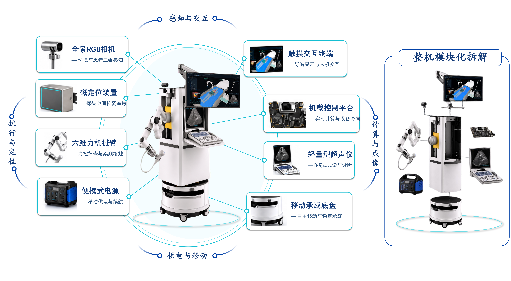
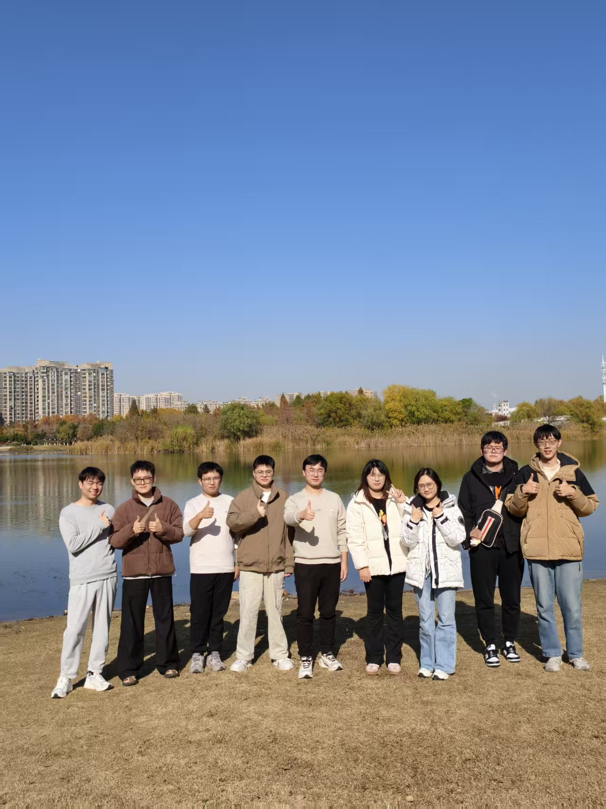
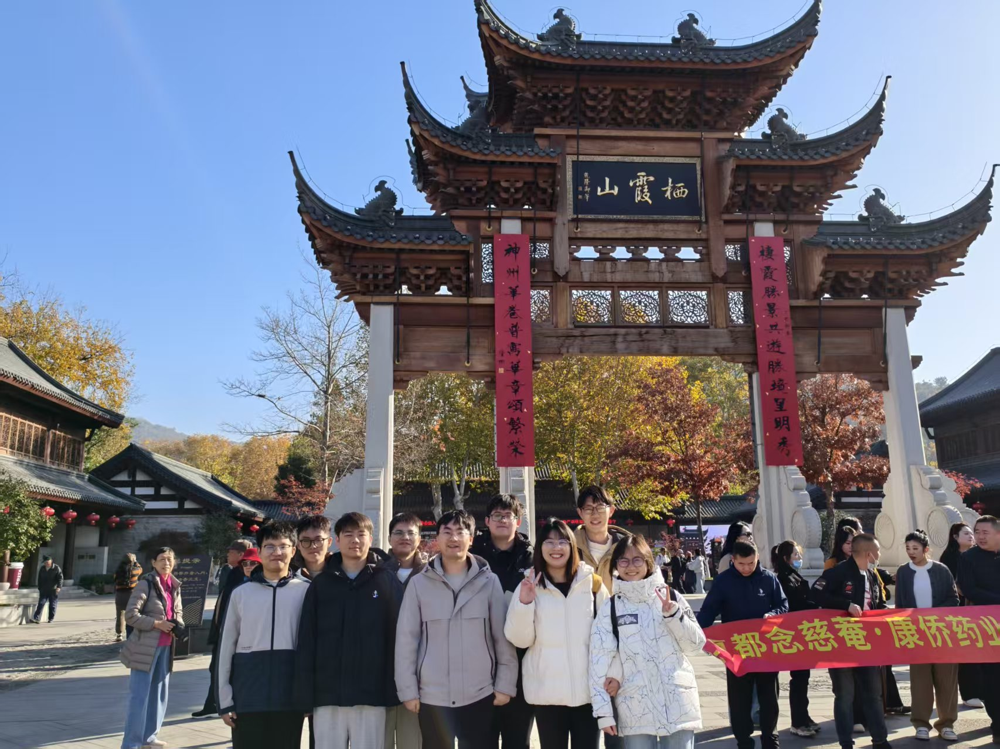

PERCEPTION → ACTION
▶ PLAY RESEARCH REEL
超声机器人感知 · 定位 · 操作
↗Nanjing University of Aeronautics and Astronautics
ULTRASOUND ROBOTICS · EMBODIED AI · MEDICAL VISION
我是万鹏，现于南京航空航天大学开展研究。面向超声机器人与具身智能的前沿交叉， 研究让机器“看懂”超声、理解环境，并在真实医学场景中做出可靠行动的方法。
OPEN / JOIN THE FRONTIER
欢迎对超声医学人工智能、超声机器人和具身智能感兴趣的同学联系交流。
RESEARCH RECRUITMENT / 2026
我们正在把超声影像的“感知”，连接到机器人系统的“行动”。
研究将围绕超声机器人感知、医学影像理解、具身智能决策与可信交互展开， 期待与有计算机视觉、机器学习、机器人、医学工程背景的同学一起，把算法推进到真实场景。
ULTRASOUND ROBOT / PROTOTYPE 01
感知 · 交互 · 计算 · 成像 · 执行

SYSTEM ONLINE VIEW FULL RES ↗01 / PROFILE
以计算机科学为起点，沿着医学影像这条真实而复杂的路径持续深入。
“
我相信，好的医学人工智能不仅要在指标上有效，也要在面对不确定性时诚实， 在面对医生和患者时可解释，在面对真实数据时保持韧性。
— 研究理念 / Research note
02 / RESEARCH
从模态、机制到可信决策，探索医学影像智能分析的下一种可能。
我的研究围绕医学超声影像中的建模、融合与推理展开， 尝试把深度学习的表征能力转化为临床可理解、可验证、可迁移的工具。
Trustworthy Multimodal Fusion
面对不同模态之间的互补与冲突，研究不确定性校准、冲突解析与可信决策。
Intelligent Ultrasound Analysis
聚焦肝脏、肝灌注与超声造影，构建从影像表征到诊断辅助的完整方法链。
Collaborative Reasoning
探索协同推理、数据增强和因果启发的学习机制，让模型的判断过程更清晰。
03 / PUBLICATIONS
把方法写进论文，也把问题留在真实世界里继续追问。
以下目录按你新增的“个人发表”文件夹整理。每条记录均可打开对应原始 PDF。
记录来源：个人发表目录 · 题目、作者、期刊与年份按 PDF 首页元数据整理
04 / PROJECTS
以问题为起点，以可落地的方法和持续的合作抵达下一步。
资料中记录的
在研 / 已结题项目
涵盖国家自然科学基金、省级基金、博士后计划、校级人才启动基金与横向合作。
国家自然科学基金 · 青年科学基金项目
江苏省自然科学基金 · 青年基金
国家资助博士后研究人员计划
横向项目 · 企业、事业单位委托
国家重点研发计划 · 课题
05 / TEACHING & HONORS
把复杂的问题讲清楚，也把好奇心交到下一代手里。
校级 · 二等奖 · 第三等次
指导学生获全国大学生课外学术科技作品竞赛“人工智能”专项赛应用赛一等奖
一种基于动态冲突感知的多模态超声融合系统及其方法
06 / TEAM LIFE
在实验室之外并肩行走，也在真实的相处中建立长期合作。


OPEN FOR DIALOGUE
欢迎围绕医学人工智能、超声影像分析与可信学习展开学术交流与合作。